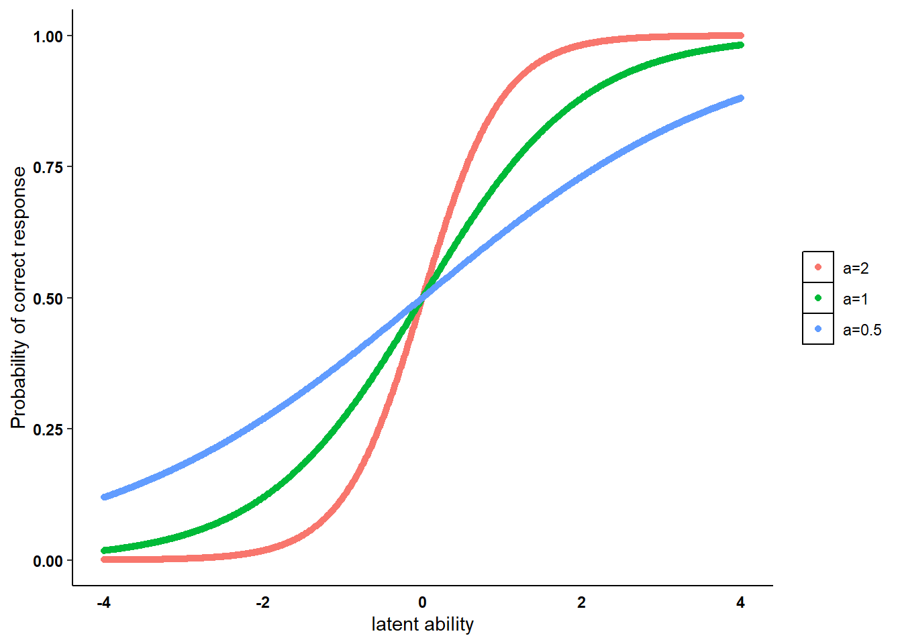
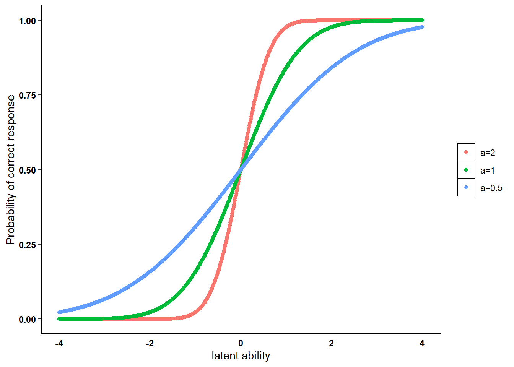

![]()
set.seed(768)
icc_tplm <- function(theta,a,b){
p_resp <- (exp(a*theta - b)) / (1 + exp(a*theta - b))
return(p_resp)
}
theta_ex <- seq(from = -4, to = 4, by = 0.01)
icc_ex1 <- icc_tplm(theta = theta_ex, a = 2, b = 0)
icc_ex2 <- icc_tplm(theta = theta_ex, a = 1, b = 0)
icc_ex3 <- icc_tplm(theta = theta_ex, a = 0.5, b = 0)Two-Parameter Logistic Model
Quarto
R
Academia
IRT

Hello folks, I hope everything is running smoothly for you. As for me, it has been quite a hectic period due to a mix of personal circumstances, teaching and grant application stuff overlapping. It seems I survived the first wave of tasks to do, and now look forward to finish off my remaining duties, mostly related to teaching in a new programme I will be coordinating these upcoming months.
As a way to take a break from my daily duties, today I would like to continue the topic from the last post about IRT models (check my last post out in case you are not sure what I am talking about!). In particular, I first introduced the theory behind the definition of the Rasch Model and its features and interpretation of its parameters in the IRT context. I then simulated some data from such model and showed how to estimate and assess the model to the data using standard R packages and functions.
Today, I would like to move on and show alternative IRT models which try to address some of the limitations intrinsic to the Rasch model. For example, a quite strong assumptions underneath the Rasch model is that all items \(k=1,\ldots,K\) discriminate respondents in the same way (i.e. they are equally related to the individual ability parameter \(\theta_i\)), but are only differentiated in terms of their difficulty parameter \(b_k\). This assumption can be eased through the two-parameter logistic model
\[ P(Y_{ik}=1 | \theta_i,a_k,b_k) = \frac{\text{exp}(a_k\theta_i-b_k)}{1+\text{exp}(a_k\theta_i-b_k)}, \]
where a item-level discrimination parameter \(a_k\) is added, thus allowing items to discriminate between respondents given the same value of the latent ability \(\theta_i\). In terms of the item characteristic curve (ICC), this implies that the ICC has a slope parameter \(a_k\) which varies depending on the item considered, there implying a different type of relationship between \(\theta_i\) and \(P(Y_{ik}=1)\) based on the item selected. We can see by simulating data from the two-parameter logistic model ICC with different values for the discrimination parameter \(a_k=\{2,1,0.5\}\) and same values for the difficulty parameter \(b_k=0\) over the same range of the latent ability parameter \(\theta_i\sim \text{Uniform}(-4,4)\).
We can then plot the generated ICCs under each scenario for the item-discrimination parameter \(a_k\).
#plot ICC
library(ggplot2)
n <- length(icc_ex1)
tplm_df <- data.frame(
prob = c(icc_ex1, icc_ex2, icc_ex3),
theta = c(theta_ex, theta_ex, theta_ex),
a = c(rep("a=2", n), rep("a=1", n), rep("a=0.5", n))
)
tplm_df$a <- factor(tplm_df$a, levels = c("a=2", "a=1", "a=0.5"))
ggplot(tplm_df, aes(x = theta, y = prob, color = a)) +
geom_point() +
xlim(-4,4) +
theme(panel.grid.major = element_blank(), panel.grid.minor = element_blank(),
panel.background = element_blank(), axis.line = element_line(colour = "black"),
legend.title = element_blank(), legend.key = element_rect(fill = "white"),
axis.text = element_text(colour = 'black', face="bold"), axis.ticks.x=element_blank(),
strip.background =element_rect(fill="white"), strip.text = element_text(colour = 'black',face = "bold")) + labs(y = "Probability of correct response", x = "latent ability") 
The three ICCs have different discrimination parameters \(a_k\):
. The ICC with the highest value \(a_k=2\) is the one associated with the steepest slope. This implies that items with such a discrimination ability are able to easily distinguish respondents with latent ability values between \(-1/1\) and associated these to a very high/low probability of correct response \(P(Y_{ik}=1)\).
. The ICC with the middle value \(a_k=1\) instead is associated with the average slope. It is less able to discriminate between respondents with \(\theta_i\) values between \(-2/2\) compared to the ICC with \(a_k=2\).
. The ICC with the lowest value \(a_k=0.5\) is associated with the flattest slope. It is more able to discriminate between respondents with \(\theta_i\) values between \(-2/2\) compared to the other two ICCs, but is less able to distinguish between respondents as the ability level is increased further.
Keep in mind that such a distinction between ICCs is made for the same value of the difficulty parameter \(b_k\), here assumed to be \(0\). As I showed for the Rasch model, changing the value of \(b_k\) will also affect the position of the ICC and thus how a given value of \(\theta_i\) is related to \(P(Y_{ik})\). However, we saw that \(b_k\) only affects ICCs by shifting its position on the plot, i.e. either more to the right (larger \(b_k\)) or to the left (smaller \(b_k\)), but will not affect their slope. Conversely, given the same level of difficulty \(b_k\) for an item, its discrimination ability \(a_k\) modifies the slope of the ICC and thus also affecting \(P(Y_{ik})\), i.e. either making ICCs steeper (larger \(a_k\)) or flatter (smaller \(a_k\)).
A probit version of the two-parameter model is also defined in the literature as the normal ogive model in which the ICC is based on a cumulative normal distribution
\[ P(Y_{ik}=1 | \theta_i,a_k,b_k) = \Phi(a_k\theta_i - b_k)= \int^{a_k\theta_i-b_k}_{-\infty}\phi(z)d(z), \]
where \(\Phi(\cdot)\) and \(\phi(\cdot)\) are the cumulative and density normal distribution function. The two model formulations resemble each other when the logistic item parameter values are multiplied with a constant scaling factor \(d=1.7\).
Using the example generated before, we can replicate the ICC graph using the same inputs for the normal ogive model as follows.
set.seed(768)
icc_ogive <- function(theta,a,b){
p_resp <- pnorm(a*theta - b)
return(p_resp)
}
theta_ex <- seq(from = -4, to = 4, by = 0.01)
icc_ex1 <- icc_ogive(theta = theta_ex, a = 2, b = 0)
icc_ex2 <- icc_ogive(theta = theta_ex, a = 1, b = 0)
icc_ex3 <- icc_ogive(theta = theta_ex, a = 0.5, b = 0)
ogive_df <- data.frame(
prob = c(icc_ex1, icc_ex2, icc_ex3),
theta = c(theta_ex, theta_ex, theta_ex),
a = c(rep("a=2", n), rep("a=1", n), rep("a=0.5", n))
)
ogive_df$a <- factor(ogive_df$a, levels = c("a=2", "a=1", "a=0.5"))
ggplot(ogive_df, aes(x = theta, y = prob, color = a)) +
geom_point() +
xlim(-4,4) +
theme(panel.grid.major = element_blank(), panel.grid.minor = element_blank(),
panel.background = element_blank(), axis.line = element_line(colour = "black"),
legend.title = element_blank(), legend.key = element_rect(fill = "white"),
axis.text = element_text(colour = 'black', face="bold"), axis.ticks.x=element_blank(),
strip.background =element_rect(fill="white"), strip.text = element_text(colour = 'black',face = "bold")) + labs(y = "Probability of correct response", x = "latent ability")
The term \(a_k\theta_i - b_k\) is often presented in the literature as \(a_k(\theta_i-b^\star_k)\) to denote the fact that \(b_k\) is defined on the same scale as \(\theta_i\), i.e. \(b^\star_k=\frac{b_k}{a_k}\) represents the point on the ability scale where a respondent has the same chance of answering correctly or incorrectly on the item \(k\) (\(P(Y_{ik}=1)=0.5\)). The metric of the ability parameters is known from item response data only up to a linear transformation. The metric can be identified by fixing a discrimination and difficulty parameter or by adding constraints that the sum of item difficulties and the product of item parameter values equals, for instance, zero and one, respectively, or by fixing the mean and variance of the population distribution of ability parameters. Note that the choice of the identifying restrictions can lead to numerical problems in the estimation of the parameters.
Good! I think I am getting th gist of these introductory models, which is precisely why I think writing about them here can help me into learning or at least give me the motivation to learn such topic. I just hope that I can speed up the process a bit as I already want to learn more!